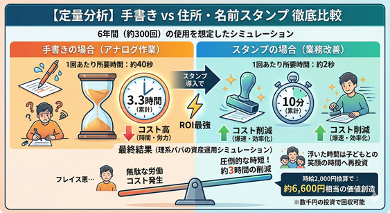
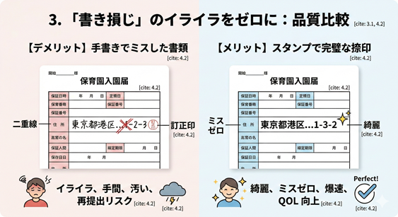
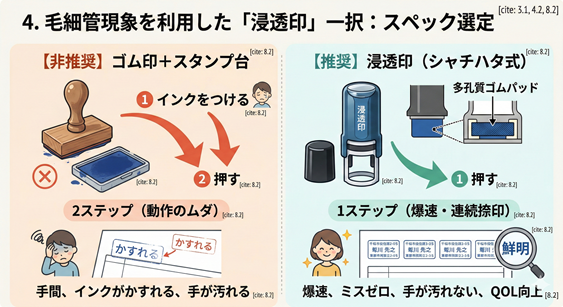
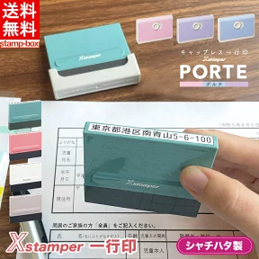

※本記事はプロモーションを含みます
【時短ハック】保育園準備の住所書きをスタンプで自動化。6時間の自由を作るコスパ最強の導入術

スマホ一つで何でもできる令和の時代に、なぜか残っている「手書き書類」。数千円の住所スタンプを買うだけで、どれだけの時間とストレスが削減できるのか、理系パパが真面目に計算してみました。
error 1. 保育園や病院の書類、なぜ未だに全部手書きなのか？
4月の入園・進級シーズン、本当に大変ですよね。私も経験して絶望したのが、「無限名前・住所書き地獄」です。
仕事と育児でクタクタに疲れた夜、都道府県からマンション名までの住所を何度も書き直すのは、単なる手間の問題ではありません。親の貴重な気力や体力をゴリゴリ削り取る、非効率な「アナログ作業」の極みと言えます。
schedule 2. 時間のコスパを計算してみた（手書き vs スタンプ）

少し理系っぽく、時間コストを計算してみましょう。子どもが小学校に上がるまでの約6年間、予防接種や病院、保育園の書類で、推定「300回」は住所を書くことになります。
・手書き：40秒 × 300回 ＝ 約3.3時間
・スタンプ：2秒 × 300回 ＝ 約10分
仮に自分の時給を2,000円だとすると、約6,600円分の労働時間が、わずか数千円の投資で丸ごと浮く計算になります。これって、投資対効果（ROI）がめちゃくちゃ高いと思いませんか？
fact_check 3. もう一つの罠「書き損じ」のイライラをゼロに

手書きのもう一つの罠が「書き損じ」です。公的書類は修正テープが使えないことが多く、深夜にミスをすると二重線と訂正印という最悪の手間を生みます。
スタンプを導入すれば、この「うっかりミス」を物理的にゼロにできます。毎回必ず、美しく正しい文字がポンと印字されるのは、精神衛生上も最高です。
science 4. 選ぶならインク内蔵の「浸透印（シャチハタ式）」一択

どんなスタンプが良いのか？理系パパの結論は「浸透印（シャチハタ式）」一択です。
本体にインクが内蔵されている浸透印なら、毛細管現象で常に最適なインク量が印面に供給されます。スタンプ台不要の1ステップ操作は、大量の書類を処理する際の「動作のムダ」を最小限に抑えてくれます。
done_all 5. 結論：親のエネルギーは子どもとの笑顔のために使おう
子育て中の親の体力と気力は有限です。単調な書類書きでエネルギーを使い果たすくらいなら、便利な道具にサクッと頼ってしまいましょう。浮いた時間は、お子さんと笑顔で過ごす時間や、自分自身の睡眠時間にあててくださいね。
▼ 理系パパ推奨：マンション名も綺麗に押せる高精細スタンプ ▼

[楽天市場で詳細を見る]

※2月〜3月の入園準備シーズンは注文が殺到するため、早めの確保がおすすめです。